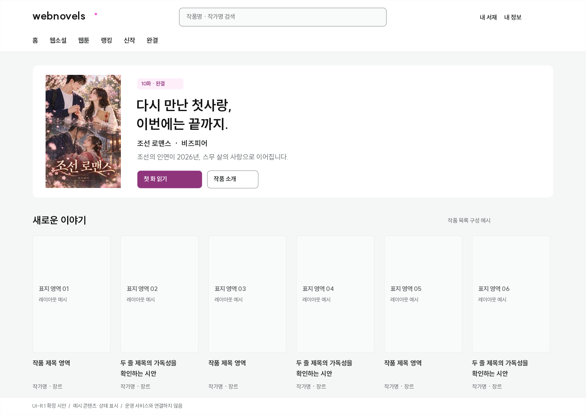
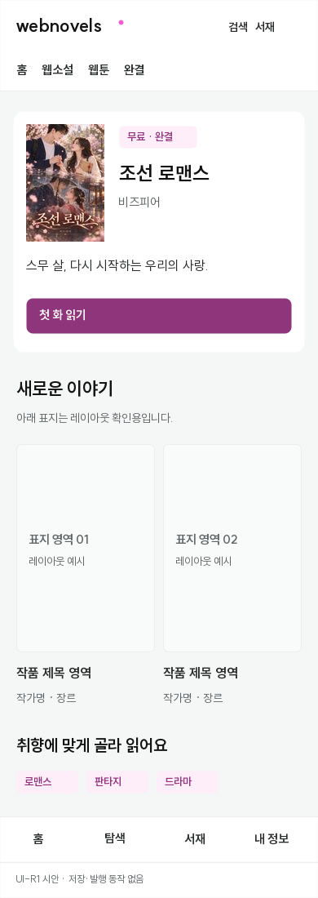
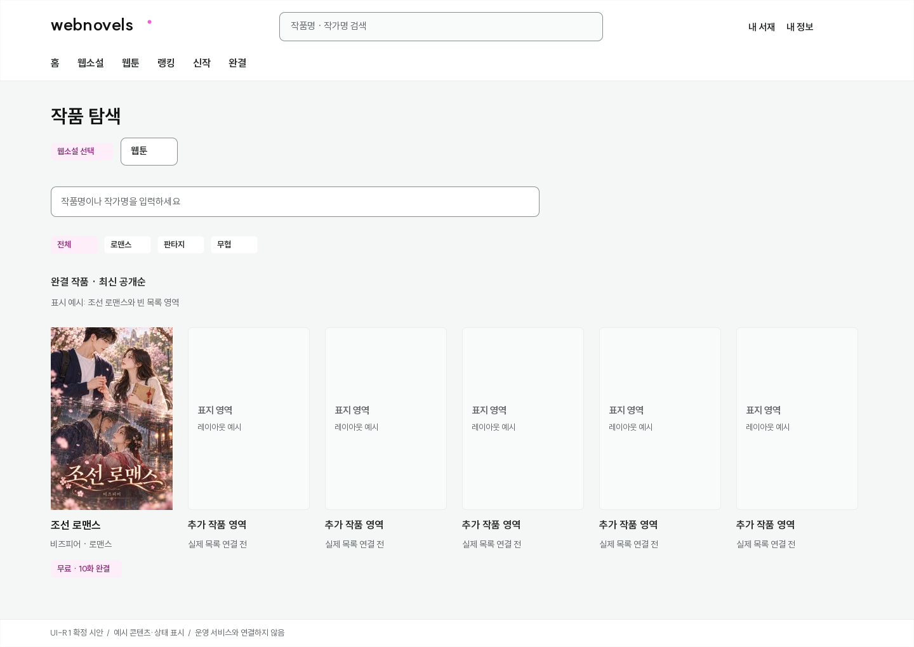
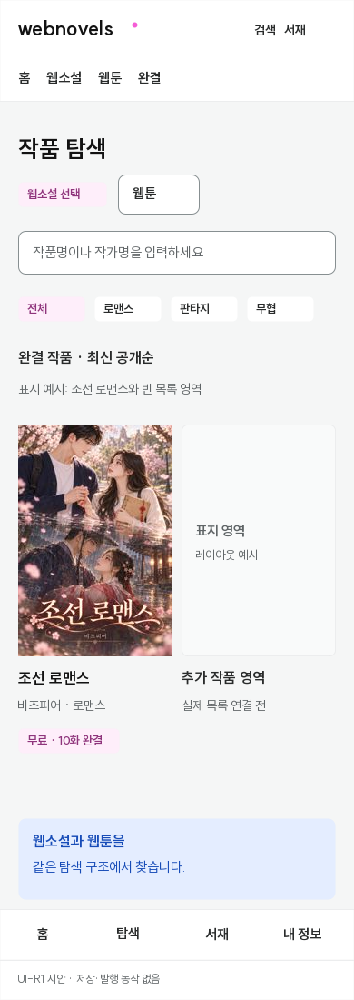
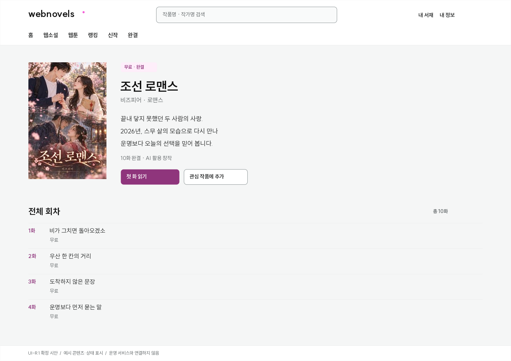
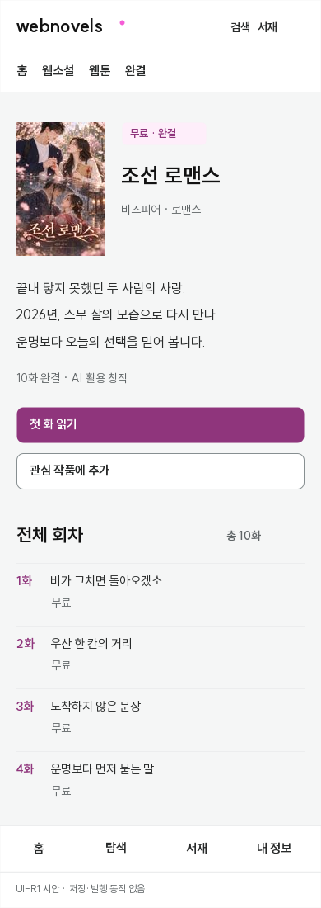
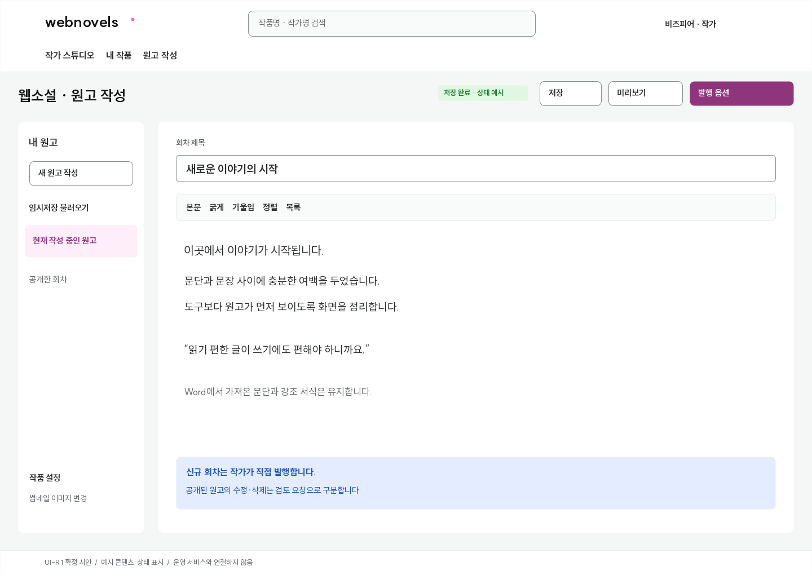
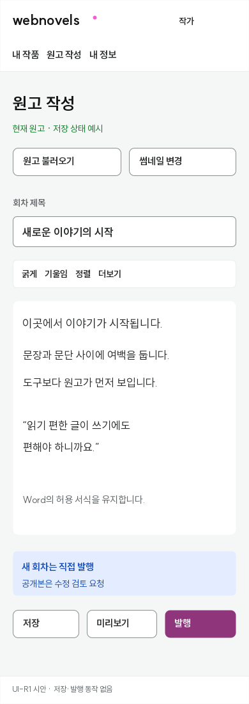
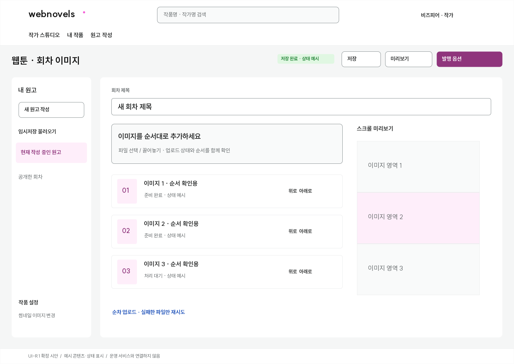
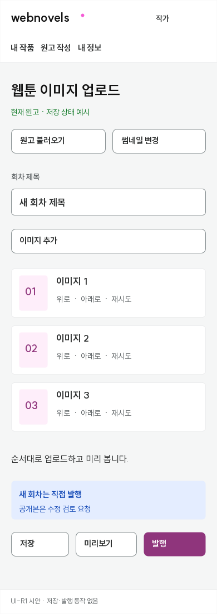

01 / 확정 기준
색은 부드럽게, 글자는 선명하게
UI는 SUIT Variable로 통일합니다. 본문 16px, 보조 정보 14px, 제목 600~700 굵기를 기본으로 사용합니다. 소설 본문에는 기존 독자 설정이 우선합니다.
바탕 #F5F6F6콘텐츠 #FFFFFF강조 #F55DD6주요 행동 #8F357C
조선 로맨스 · 10화 완결
이야기에 집중할 수 있도록 글자와 여백을 정돈합니다.
작은 설명도 읽을 수 있게
| 용도 | 대비 |
|---|---|
| 주요 버튼 흰 글자 / 자주 배경 | 7.07:1 |
| 보조 설명 / 기본 배경 | 5.46:1 |
| 밝은 핑크 위 진한 글자 | 6.62:1 |
흐린 회색과 흰 글자·밝은 핑크 조합을 본문이나 주요 행동에 사용하지 않습니다.
저장 완료 · 상태 표현 예시
공개본 수정은 검토 요청으로 구분합니다.
실패한 항목과 재시도 방법을 함께 표시합니다.
02 / 독자 홈
작품을 먼저 만나는 홈
상단 탐색 · 실제 표지 중심 · 차분한 작품 진열




03 / 작품 탐색
웹소설과 웹툰을 같은 구조로
유형 → 검색 → 장르 → 결과 · 선택된 필터를 명확하게




04 / 작품 상세
소개에서 첫 화까지, 자연스럽게
표지·작가·소개·완결 상태 · 뚜렷한 읽기 버튼 · 단정한 회차 목록




05 / 작가 · 웹소설
원고가 중심인 작업 공간
불러오기·저장·미리보기·발행을 일정한 위치에 · 표지 변경은 작품 설정에




06 / 작가 · 웹툰
올리는 순서가 보이는 업로드
번호·파일별 상태·순서 변경 · PC 스크롤 미리보기 · 모바일 핵심 조작 유지



